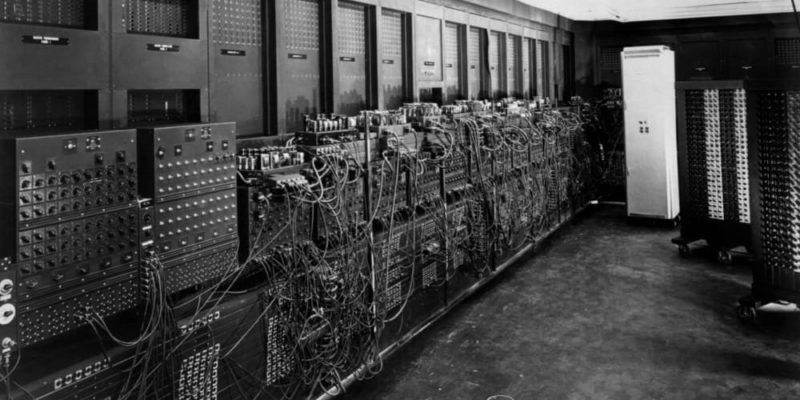
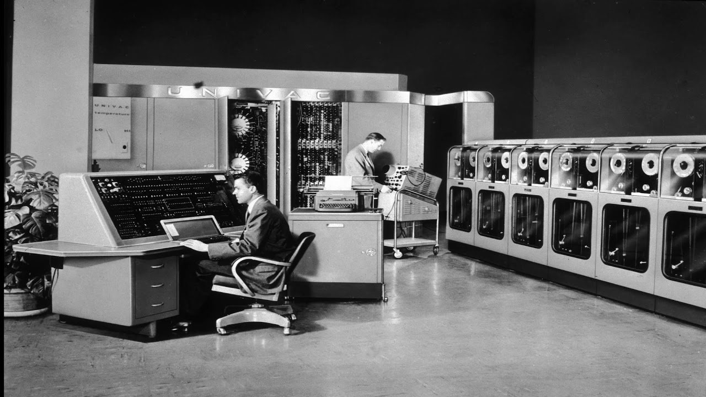
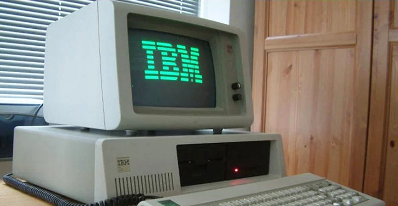
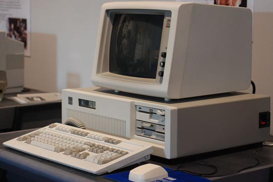

Introduccion
Las generaciones de las computadoras se dividen en cinco, cada una marcada por avances tecnológicos significativos. Estas son:
Primera Generación (1940-1956): Tubos de vacío
La primera generación de computadoras se caracteriza por el uso de tubos de vacío como componentes principales. Estos dispositivos electrónicos permitían la amplificación de señales eléctricas, pero también generaban una gran cantidad de calor, lo que limitaba su eficiencia y confiabilidad. Un ejemplo emblemático de esta era es la ENIAC (Electronic Numerical Integrator and Computer), desarrollada durante la Segunda Guerra Mundial en 1946. Las computadoras de esta generación eran enormes, consumían mucha energía y tenían una capacidad de procesamiento limitada.
Segunda Generación de Computadoras (1956-1963): Transistores
La segunda generación de computadoras marcó el cambio de los tubos de vacío a los transistores, dispositivos semiconductores más pequeños, eficientes y confiables. Esto resultó en computadoras más compactas, rápidas y con menor consumo de energía. IBM 1401 y UNIVAC 1107 son ejemplos representativos de esta época. La invención del transistor fue crucial para el desarrollo de la industria de la computación.
Tercera Generación de Computadoras (1964-1971): Circuitos Integrados
La tercera generación de computadoras vio la adopción de los circuitos integrados (chips) en lugar de los transistores individuales. Esto permitió un aumento significativo en la capacidad de procesamiento y redujo aún más el tamaño de las computadoras. La IBM System/360 y la DEC PDP-8 son ejemplos destacados de esta época. La estandarización de las arquitecturas de hardware también caracterizó esta generación.
Cuarta Generación de Computadoras (1971-1980): Microprocesadores y Computadoras Personales
La invención del microprocesador en 1971 marcó el comienzo de la cuarta generación. La integración de todos los componentes de una computadora en un solo chip permitió la creación de computadoras personales. Ejemplos notables incluyen la Altair 8800 y la IBM PC. La informática se volvió más accesible para el público en general, y la interfaz gráfica de usuario comenzó a reemplazar la interacción mediante comandos.
Quinta Generación de Computadoras (1980-presente): Computación Distribuida y Avances en Inteligencia Artificial
La quinta generación de computadoras se caracteriza por el desarrollo de tecnologías como la computación distribuida y la inteligencia artificial. Se exploran conceptos como el procesamiento paralelo, el reconocimiento de voz y la resolución de problemas complejos. Los sistemas expertos y el aprendizaje automático han avanzado considerablemente. Las computadoras de esta generación están diseñadas para procesar grandes cantidades de información y realizar tareas complejas, como el procesamiento del lenguaje natural y la toma de decisiones basada en datos. Ejemplos de esta época incluyen supercomputadoras y sistemas basados en la nube.